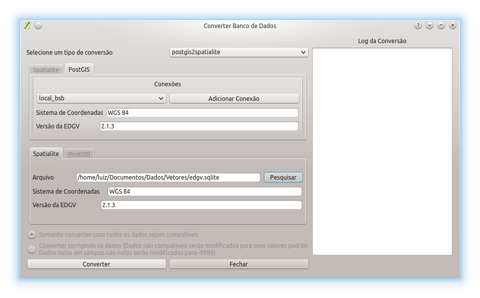
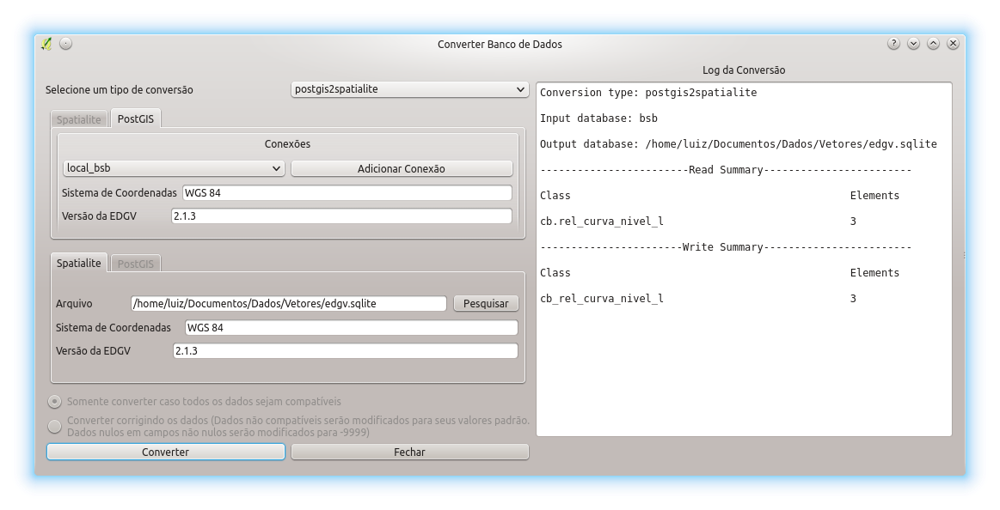

O DsgTools permite que sejam feitas conversões de bancos de dados EDGV criados por ele. A conversão pode ser feita de PostGIS para Spatialite e de Spatialite para PostGIS.
Para converter o usuário precisa definir como será feita a conversão dos dados. Caso a conversão seja de PostGIS para Spatialite não há a necessidade de se escolher como a conversão será feita pois o PostGIS é um banco que garante a integridade de seus dados de acordo com o previsto na EDGV. Caso a conversão seja feita de Spatialite para PostGIS o usuśrio deve escolher como proceder durante a conversão. Nesse caso existem duas opções:
Para iniciar uma conversão o usuário deve escolher entre um dos dois tipos disponíveis, postgis2spatialite ou spatialite2postgis, como se pode ver na figura abaixo.
Com a escolha feita, deve se escolher o banco de entrada e o banco de saída. Deve se lembrar que os bancos devem estar previamente criados .

Com os bancos de entrada e saída definidos só resta clicar em Converter e esperar o processamento. Dependendo do tamanho o banco o processo pode levar diversos minutos. Após a conversão aparecerá um resumo das atividades executadas para o usuário verificar se tudo foi convertido corretamente.
